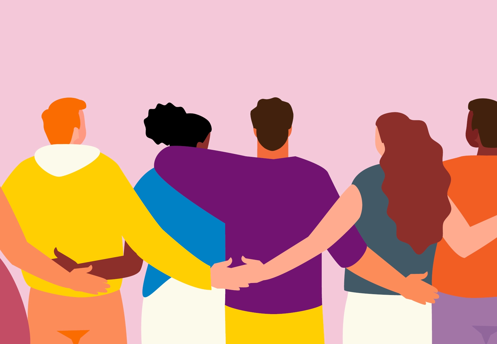

My Identity and Values

For two years now, I have been taking myself away on a 'Lou's life workshop' weekend. Last year I went to kapiti coast. Hired a bach beside the beach and really took the time to figure out what was important to me.
It all started because I was feeling really lost and ungrounded, both at work and in my personal life. Honestly, was feeling really shit about the life I was leading, and I didnt think I wasnt being the best person I could be.
The values I care about are "Family, Courage & Kindness".
It was originally just Courage and Kindness, but it felt like something was missing. I thought family was just a gimme, but it didnt feel right not including it.
This is how it plays out for me:
** Family **
Family is the really really important. I like being around my family. There were a few years where I just wasnt doing everything I could be help my family and be there for them.
So highlighting Family in my values means that I prioritise them above most things. I will always pick my brother up, I will always try to get around to see my sister. I fly home to spend time with my parents.
My sister is also my best friend.
** Courage **
There is a few things that I care about when it comes to courage:
- Have the courage to stand up for whats right
- Have the courage to push myself out of the comfort zone
- Have the courage to talk about things that I wouldnt necessarily be comfortable with
Courage has lead me to be more transparent, and embrace imperfection. Sharing my failures, and ultimately allowing me to build stronger relationships.
** Kindness **
Kindness for me has two sides. Kindness to others and kindness to myself. I originally had something written down about putting others above myself always.
But I learned that by not looking after myself, I couldn't be the best person for others. The old saying being...'make sure that you secure your airbag, before you help others'.
Talking about the kind actions you make take for others takes away it's selflessness. So it's hard for me to share examples here.
I've had some pretty awesome mentors to get me in the mental position that I am. I particular value learning from people who have differing perspectives than mine. It really opens my eyes.
I feel like my support network, alongside my own values combined is a power shield for succeeding in this course.
Here is a message my sister sent me to share with you all (she is also my best friend, so super biased):